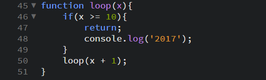
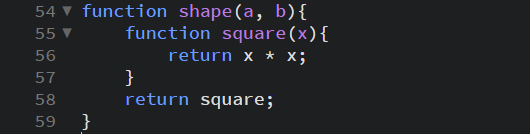

Functions
A function in java script is a procedure, it is a set of statements that perform a task.
Sample function
Functions can also be created by a function expression.
Scope of a function
Variables declared inside a function can only be accessed inside that function and cannot be used in any other place.
Recursion
A function can refer to and call itself. A function that calls itself is called a recursive function
Instead of using

You can use (does not apply for all)

Nested Functions
In java script, you can nest a function within a function. However, the inner function is private to the outer function. This means that the outer function cannot use the variables declared in the inner function.

Closures
Closures are one of the most powerful functions in java script. Java script allows the inner function full access to the variables declared in the outer function and the other variables declared in the functions connected to it. However, the outer function does not have access to the variables declared in the inner function. This provides security for the variables declared inside the inner function.
Function Parameters
There are two kinds of parameters in java script since ECMA script 2015. These parameters are default parameters and rest parameters.
Default parameters – catches undefined variables and you can declare a variable in the function head
Rest parameters – allows you to represent an indefinite number of arguments as an Array.
Arrow Functions (Fate-Arrow)
An arrow function in java script allows you to lexically bind the this value and has a shorter syntax compared to function expressions.
Predefined Functions
eval() – evaluates java script code represented as a String
isFinite() – determines whether or not a value is a finite number or not
isNan() – determines whether a value is NotANumber or not
parseFloat() – parses a string and returns a floating point number
parseInt() – parses a string an returns an integer
decodeURI() – decodes a Uniform Resource Identifier created by encodeURI
decodeURIComponent() – decodes a Uniform Resource Identifier previously created by the encodeURIComponent
encodeURI() – encodes a Uniform Resource Identifier by replacing each character to UTF-8
encodeURIComponent – encode a Uniform Resource Identifier by replacing each character to UTF-8